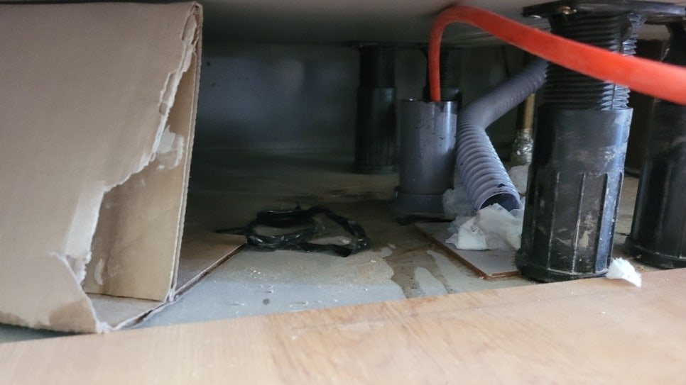
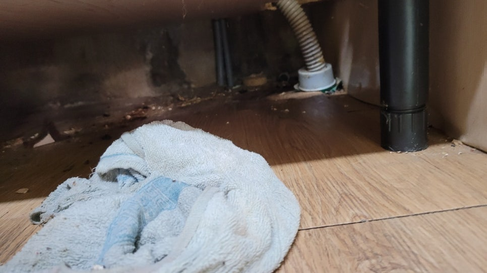
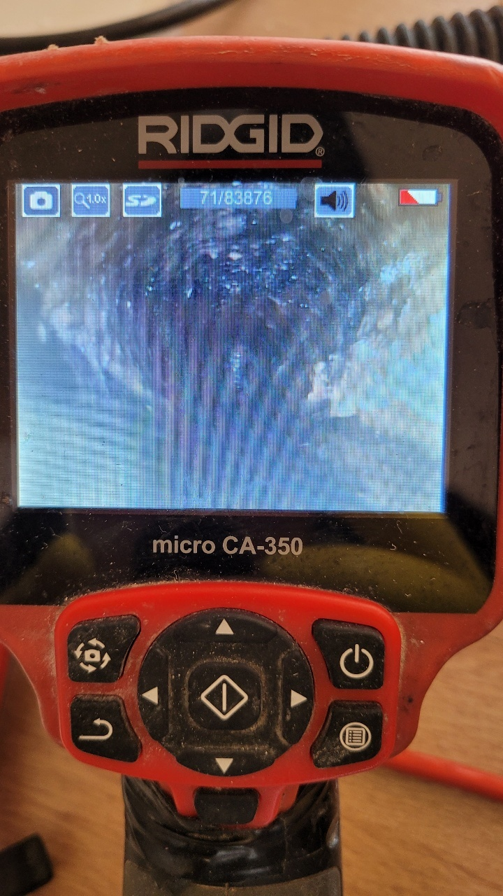
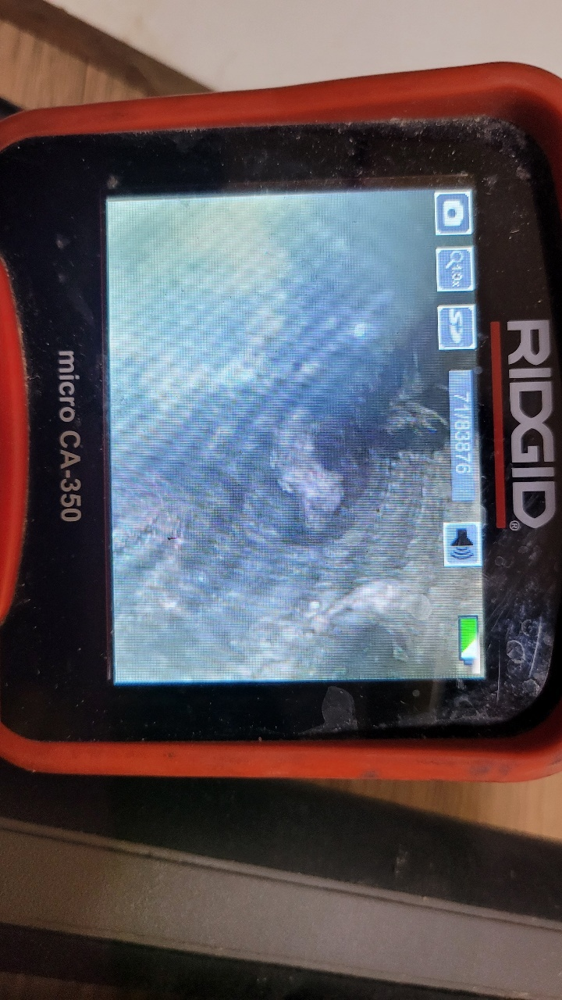
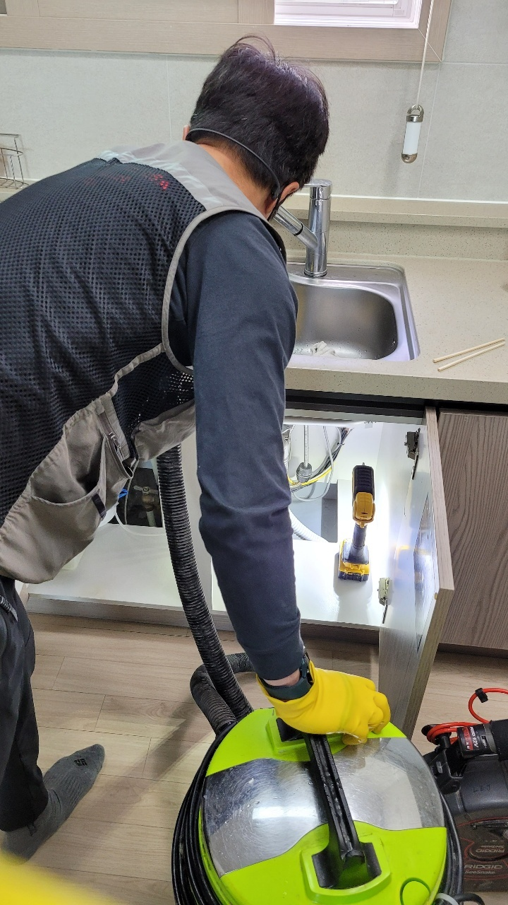
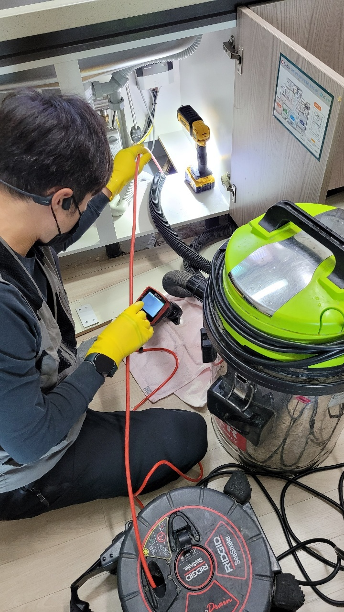
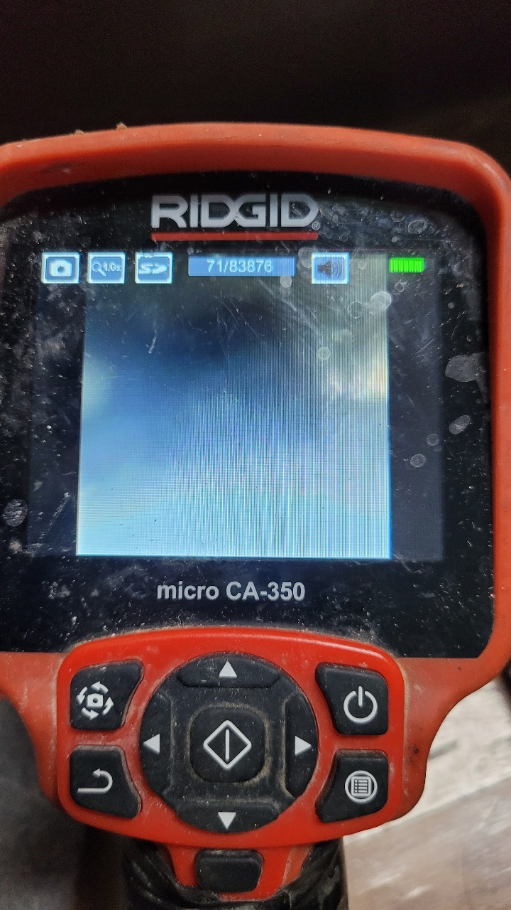

🏠 향남하수구막힘 행정리 제암리 막힘해결 제대로 뚫은 현장입니다!
화성 향남 하수구막힘 전문 시공 후기

📋 작업 개요
- 위치: 화성 향남, 향남, 화성
- 서비스 유형: 하수구막힘, 배관막힘, 맨홀막힘, 역류해결, 뚫는업체, 고압세척
- 작업 일시: 2022. 11. 11. 19:42
- 업체명: 하수구수사대 (010-5615-2118)
🔍 문제 상황
안녕하세요. 하수구수사대입니다.
요즘은 빌라와 같은 다세대 주택이나 일반 가정에서도 하수구가 막히는 일이 많이 생겨나고 있습니다.
대부분의 분들이 아파트나 이러한 다가구 주택에 거주를 하고 있으셔서 주변 인프라나 신축 주택으로 생활의 편리함으로 선택하는 경우가 많이 있습니다. 하지만 많은 사람들이 생활을 하는 공간인 만큼 이렇게 하수구가 막히게 되는 경우도 빈번하게 발생할 수 있는 것입니다.
이렇게 하수구가 한번 막히게 되면 상당히 심각한 문제뿐만 아니라 심한 악취를 풍겨서 불편함이 클 수밖에 없는데요. 이번 향남하수구막힘 행정리 제암리 막힘해결을 하기 위해서 방문한 현장도 마찬가지로 심한 악취까지 올라오는 상황이었습니다.

🔎 원인 분석
💡 전문가 진단: 요즘은 빌라와 같은 다세대 주택이나 일반 가정에서도 하수구가 막히는 일이 많이 생겨나고 있습니다.
향남하수구막힘 행정리 제암리 막힘해결 현장에 도착을 해서
먼저 내시경으로 오수관 내부의 상태를 확인하였는데요.
이번 현장은 신축 건물이었는데 이렇게 신축에서도 하수구가 막히는 일은 자주 일어날 수 있습니다. 연식이 오래된 건물의 경우에는 이러한 막힘이 더욱 자주 발생할 수 있기 때문에 정기적인 관리가 필요하다고 할 수 있습니다.
건물의 연식에 따라서 하수구를 주기적으로 점검을 해 준다면 평소에도 갑작스러운 막힘없이 쾌적하게 생활을 해보실 수 있으니 참고하시길 바랍니다. 배관 내시경을 통해서 확인을 해보니 내부에는 역시나 많은 양의 이물질들이 가득 차 있는 상황이었습니다. 고객님께서는 최근에 다세대 주택으로 이사를 한 지 1년도 채 되지 않았는데도 갑작스럽게 이렇게 하수구가 막히는 상황이 발생해서 당황해하셨다고 합니다.
경기도 화성시 향남읍 상신하길로298번길 7-11 8층 805호

🔧 작업 과정
처음에는 급한 마음에 셀프로 배관을 뚫어보려고 하시다가 도저히 되지 않아서
저희와 같은 전문업체로 연락을 주시게 되었습니다.
처음에는 다른 업체들도 불러보았는데 작업을 한 후에 얼마지나지 않아 다시 막히게 되면서 근본원인 해결을 해주는 곳으로 다시 연락을 주신 것이었습니다. 아무래도 이렇게 반복적으로 막히는 상황이 발생하는 이유는 바로 근본적인 원인 확인을 제대로 하지 못하고 해결을 하려고 했기 때문일 것입니다.
하수구를 뚫는 업체라고 하더라도 사실상 각각의 업체마다 보유를 하고 있는 장비의 종류가 모두 다르고 기술력에도 숙련도에 따라서 차이가 있기 때문에 이러한 결과가 어쩔 수 없이 발생할 수 있는 것입니다.
보통 하수구가 막히게 되는 원인은 아주 다양한데요.
때문에 일반 고객분들께서는 그 원인을 도저히 알 수 없는 것이 당연할 수 있습니다. 배관은 매립으로 외관상으로는 어떤 문제점이 있는지 확인이 어려운 것입니다. 이번 현장의 경우에 잦은 막힘이 발생하게 된 원인은 대부분 외부의 맨홀과 연결되어 있는 메인 배관을 통해서 이상이 생기는 경우가 많습니다.
내부 피해 현장을 확인 후에 외부 메인관도 함께 살펴보았습니다. 일반 가정의 경우는 특히 이렇게 같은 메인 배관을 사용하는 세대가 많은데요. 그러므로 이러한 건물 형태의 배관 세척은 꼭 필요한 것이라고 할 수 있습니다.
배관 내부에는 이물질들이 대부분이었지만 여기저기에 알 수 없는 이물질과 덩어리 그리고 물티슈 등도 보였습니다.


✅ 작업 완료
오랜 시간에 걸쳐서 여러가지의 복합적인 원인으로 하수구 막힘이 발생한 것으로 보이는데요. 빠르게 해결을 하기 위해서 다른 배수구도 함께 확인을 해보았습니다. 먼저 입구 쪽에 역류로 인해서 차오른 물을 먼저 일부를 제거를 해준 다음에 본격적으로 고압 세척을 진행하였습니다.
강한 수압으로 배관 내의 모든 이물질들을 깨끗하게 제거하는 작업을 하였습니다. 배관 내시경을 통해서 내부가 완전히 깨끗해진 것을 확인 후에 향남하수구막힘 행정리 제암리 막힘해결 작업을 마무리하였습니다.




⚠️ 하수구 배관 막힘 예방 및 관리 가이드
- ✅ 머리카락, 비닐, 물티슈 등 물에 분해되지 않는 이물질은 하수구 유입을 절대 금지해 주세요.
- ✅ 하수구 거름망을 씌우고 모여진 이물질은 주기적으로 쓰레기통에 바로 비워주셔야 합니다.
- ✅ 배관 노후가 심할 경우 이물질이 더 쉽게 걸리므로 주기적인 배관 세척(고압세척 등)을 권장합니다.
- ✅ 작업 후 1년 이내 재발 시 하수구수사대에서 무상 A/S 보증 서비스를 제공합니다.
💡 핵심 정리
- 확실한 장비 작업(내시경 점검 및 샤프트 스케일링)으로 원인을 뿌리 뽑습니다.
- 작업 후 1년 이내에 동일한 부위 재발 시 100% 무상 A/S 서비스를 보장합니다.
- 서울 · 경기 · 인천 전 지역에 24시간 언제든 긴급 출동할 수 있도록 항시 대기 중입니다.
❓ 자주 묻는 질문 (FAQ)
🚨 화성 향남 하수구막힘 문제로 고민이신가요?
정확한 원인 진단과 확실한 시공으로 재발 없는 해결을 약속드립니다.
24시간 긴급 출동 | 서울 · 경기 · 인천 전지역 | 1년 내 재발 시 무상 A/S